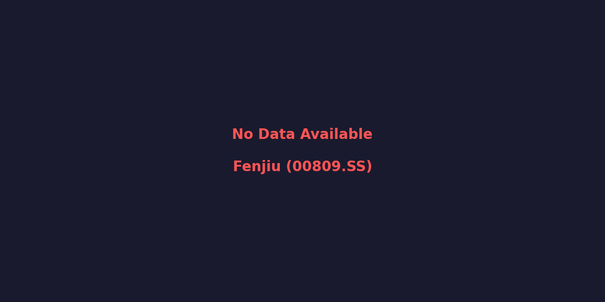

清香型白酒龙头 | 青花系列高端化 | 省外高势能渗透
⚠️ 全年年报尚未发布(截至2026-04-02)
在白酒行业深度调整、渠道高库存的周期低谷中,山西汾酒凭借"青花系列向上突破"和"长江以南市场高歌猛进"两大战略引擎,展现出极其罕见的抗周期韧性。2025年前三季度:营收329.24亿元(+5.00% YoY),净利润114.05亿元(+0.48% YoY)。青花20已稳居百亿超级大单品,省外营收占比突破62%,利润率逆势创下历史新高。

数据来源: Yahoo Finance | 过去52周周线走势
| 核心指标 | 2023年 | 2024年 | 2025年H1 / Q3累计 | 当前趋势 |
|---|---|---|---|---|
| 营业收入 (亿元) | 319.28 | 360.11 | 329.24 (Q1-Q3) | 逆势增长 |
| 归母净利润 (亿元) | 104.38 | 122.43 | 114.05 (Q1-Q3) | 基数效应下微增 |
| 销售毛利率 | 75.3% | 76.0% | ~76%+ | 稳中有升 |
| 销售净利率 | 32.7% | 34.0% | 34.6% / 最高破40% | 创历史新高 |
百亿大单品护城河: 2024年青花系列销售额突破150亿元,占总营收比重高达46%。其中"青花20"已牢牢站稳次高端百亿大单品地位;"青花30"复兴版在千元价格带亦打开局面。
拔中高、控底部: 在行业价格倒挂的逆风下,汾酒依靠青花系列的结构性升级,成功推动净利率在2024-2025年连续创出新高(24Q1净利率一度突破40.86%),实现了"量价齐升"到"质价双优"的转变。
跨越黄河,剑指长江: 2024年省外营收达223.74亿元(YoY +13.8%),占比超过62%。"十四五"末有望冲击70%的省外占比。汾酒彻底蜕变为全国性酒企。
玻汾开路,青花收割: 在长三角、珠三角等高线经济圈,汾酒采用"高性价比玻汾导入培育口感 + 青花20承接高端商务宴请"的战术,成功切入南方高端酒水市场,新增省外经销商数百家,渠道推力极强。
汾酒是本轮白酒周期中最具韧性和成长确定性的标的。市场当前赋予的低估值(股价回调超30%)已充分反映了宏观消费悲观预期和库存担忧。
数据来源：财务数据来源于公司年报及季度报告；估值指标基于2026年4月2日收盘价计算；盈利预测来源于华创证券、中金公司等机构一致预期。
* ⚠️ 2025全年年报尚未发布（截至2026-04-02），预计2026年4月披露。